Overview
(vs. 77.5% teleop)
collection
(+42.5 over UniDex)
(lowest)
1 · Motivation
Learning from human data: faithful to contact, efficient to scale
Human demonstrations are a fast and scalable source of manipulation experience. To train contact-rich dexterous policies, they must be turned into robot data that is both faithful, reproducing the demonstrated contacts, and efficient, scaling to large and diverse datasets. Existing approaches give up one for the other.
Matches hand poses or fingertip positions. Fast, but contacts slip, distort or break.
Relies on object meshes, pose estimates or simulated refinement. Faithful, but costly for every new object and task.
Uses measured fingertip touch as the correspondence between human and robot. No object model, no simulator.
1.1 Faithful: kinematics alone does not preserve contact
Conventional retargeting matches hand poses, fingertip positions or hand-centric vectors. This works for free-space motion, but fixed fingertip targets can push a contacting finger off its support region, distort the relations among simultaneous contacts, or break contact altogether. Kinematically plausible motion can still be physically ineffective.
1.2 Efficient: fidelity should not cost scalability
Object-aware methods add hand–object geometry or physics constraints, and other pipelines refine trajectories through simulation and reinforcement learning. They improve physical consistency, but need object meshes, pose estimation, environment reconstruction or simulated rollouts, which is overhead that does not scale with large human datasets.
1.3 Key insight: contact is the bridge
Physical contact itself provides a natural correspondence across embodiments.
Tactile sensing directly reveals which fingertips touch, where contact occurs and how strongly each region is loaded. Measured during the human demonstration, these signals constrain the transfer without object reconstruction or simulation, keeping it faithful to contact and efficient at the same time.
1.4 Comparison with prior frameworks
| Method | High-DoF Hands | Sim-Free | No Object Pose / Geom. | Robot-Free Fine-Tuning |
|---|---|---|---|---|
| TouchBridge (ours) | ✓ | ✓ | ✓ | ✓ |
| AINA | ✗ | ✓ | ✗ | ✓ |
| HumanEgo | ✗ | ✓ | ✗ | ✓ |
| DexUMI | ✗ | ✓ | ✓ | ✓ |
| ManipTrans | ✓ | ✗ | ✗ | ✓ |
| TopoRetarget | ✓ | ✗ | ✗ | ✓ |
| RoboPaint | – | ✗ | ✗ | ✓ |
| SPIDER | ✓ | ✗ | ✗ | ✓ |
| C2Dex | – | ✗ | ✗ | – |
| MotionTrans | – | ✓ | ✓ | ✗ |
| EgoMimic | ✗ | ✓ | ✓ | ✗ |
2 · Method
How TouchBridge works
2.1 Human–robot vision and tactile system
TouchBridge-Cap and the robot share the same wrist-camera viewpoint and fingertip tactile layout.
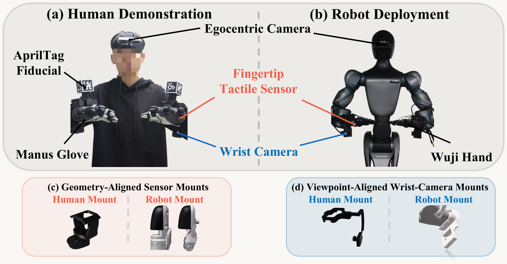
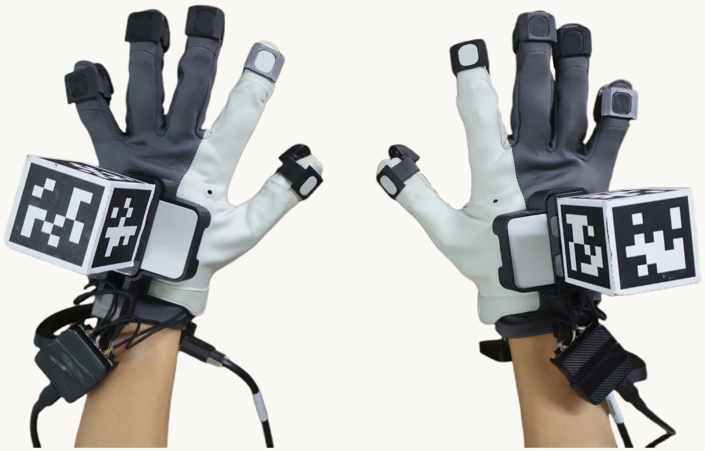
Stable hand tracking
Under fast hand motion or wrist flips: tracking loss, pose jumps and latency.
Multi-face AprilTags tracked in the egocentric video stay visible and frame-synchronized.
2.2 Tac-Retarget: retargeting through touch
Tac-Retarget solves for the poses and joints of both robot hands. The robot must reproduce three things from the demonstration: the human fingertip poses, where each fingertip touches, and how simultaneous contacts relate to each other. It uses fingertip touch only, with no object mesh and no pose estimate.
Tactile contact alignment
Each fingertip's taxel responses define a contact patch, with a response-weighted center μ and a support of active taxels X. Human and robot sensors share the same taxel layout. Kinematic retargeting can match the fingertip position and still touch with the wrong part of the pad. Tac-Retarget aligns μ and X, so the robot touches with the same part of its fingertip as the human did.
Contact-graph preservation Interactive · drag to rotate
Tactile activation decides which fingertips are in contact, and these contacts form a graph whose edges link the simultaneously touching fingertips. Matching the graph's distance-weighted Laplacian coordinates keeps the contacts in the same spatial relation on the robot, and prevents the lost contacts and penetration that kinematics alone would cause.
2.3 Human-to-robot data transformation
3 · Experiments
Does it work on a real robot?
3.1 Human-derived vs. teleoperated robot data
3.2 Tac-Retarget vs. kinematic retargeting
Contact preservation Simulation
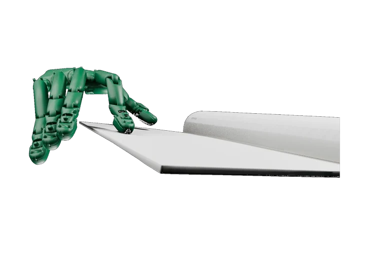
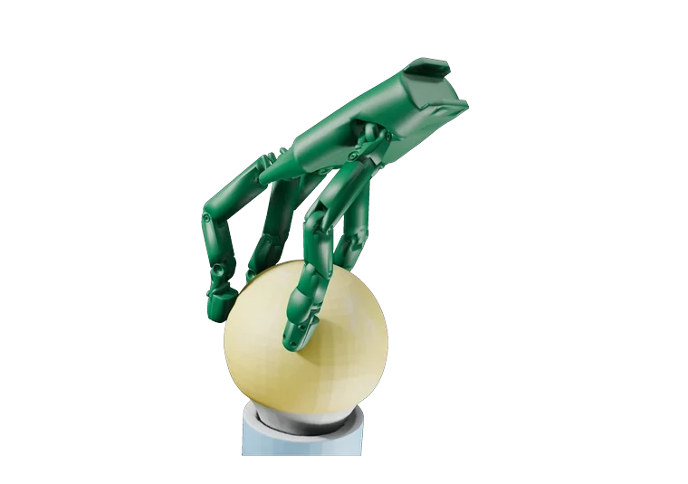
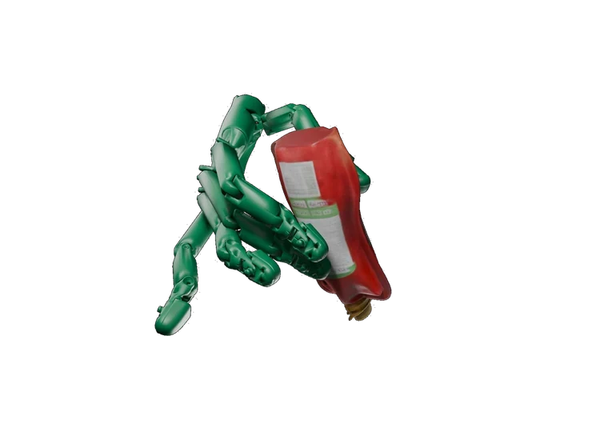
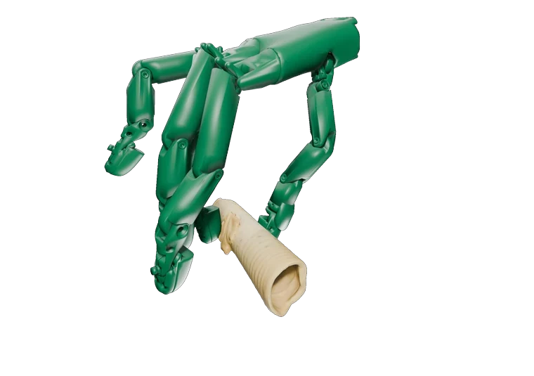
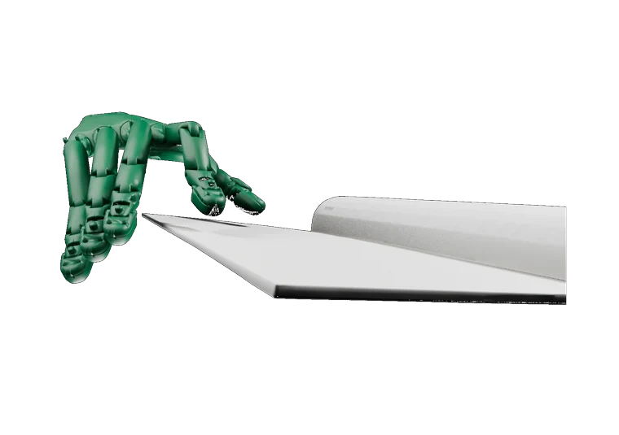
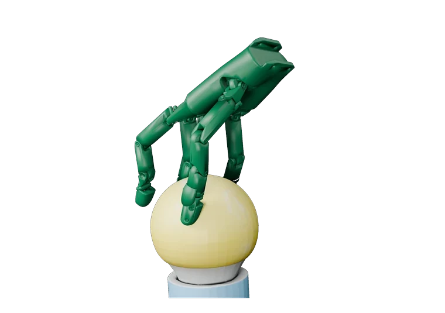
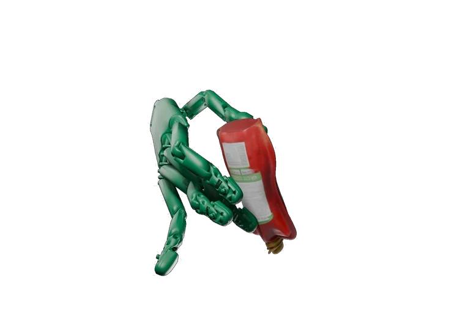
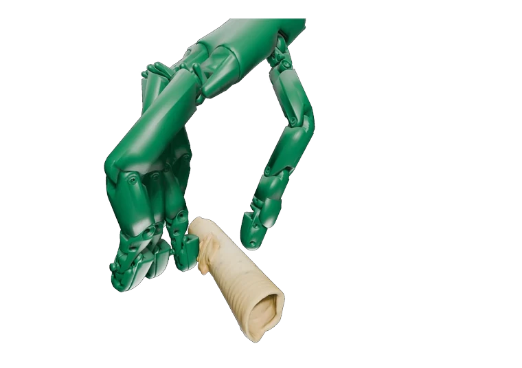
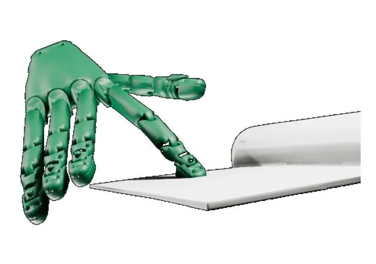
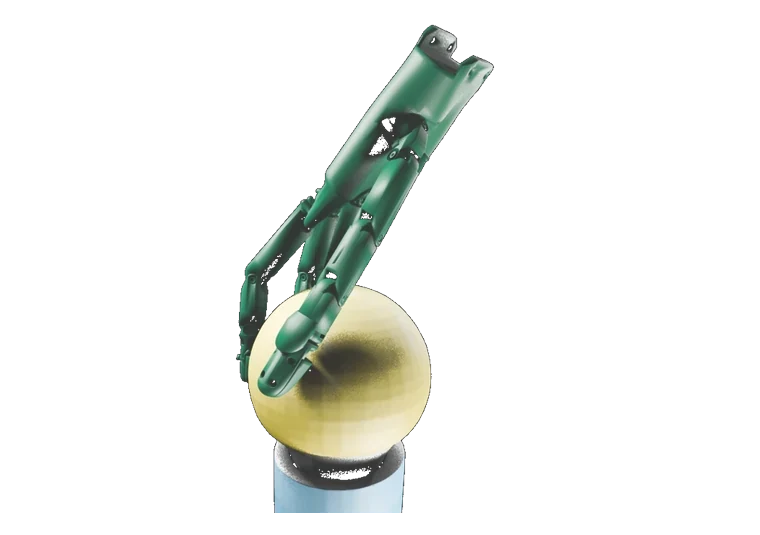
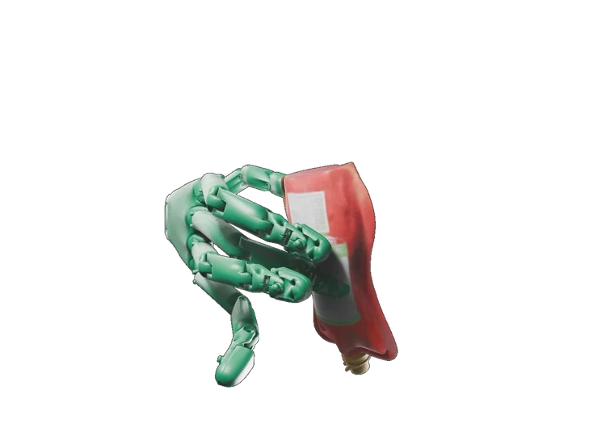
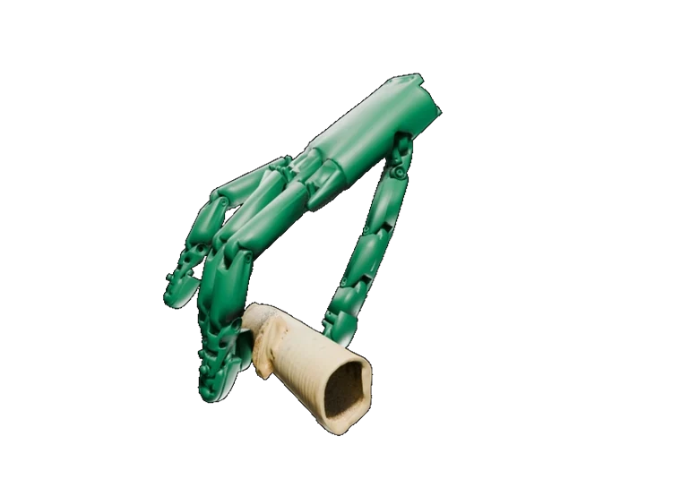
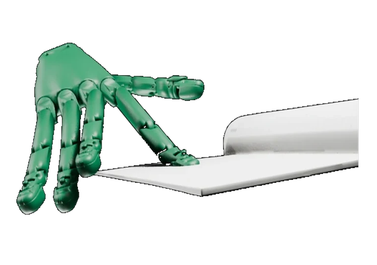
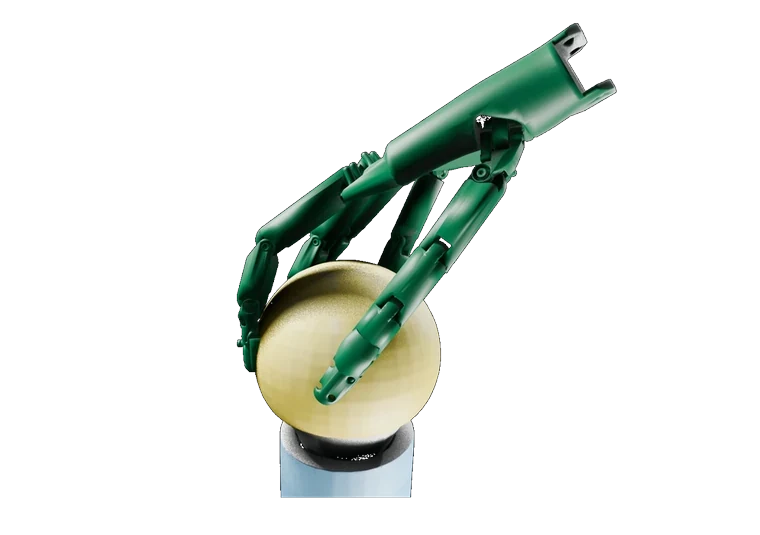
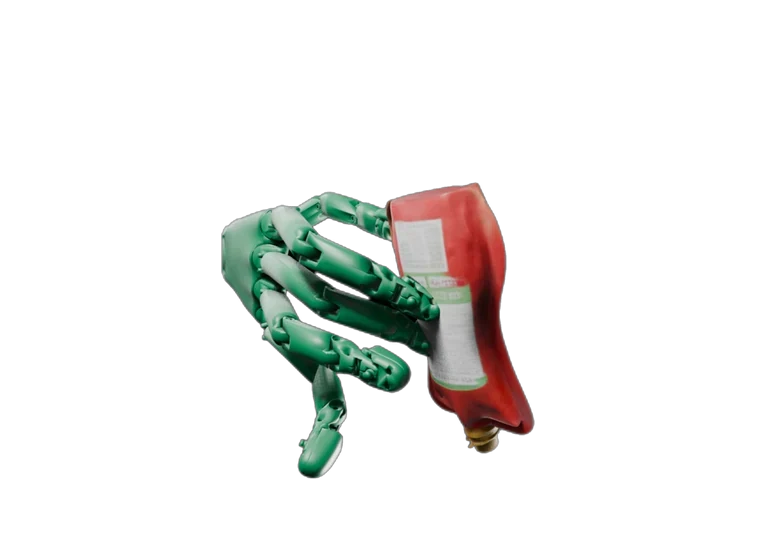
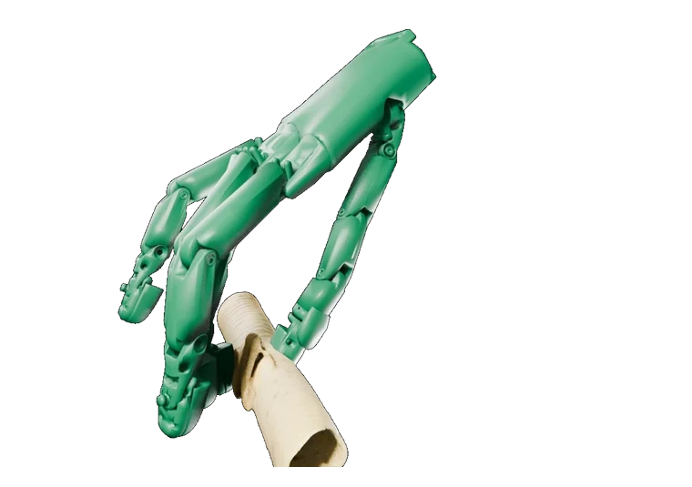
| Method | Contact error (mm) ↓ |
|---|---|
| Tac-Retarget (Ours) | 4.667 |
| DexPilot | 6.354 |
| UniDex | 7.715 |
| Tac-Retarget w/o contact graph | 6.659 |
| Tac-Retarget w/o contact alignment | 7.071 |
| Tac-Retarget (kinematic only) | 7.540 |
Downstream policy performance Real robot
4 · Conclusion
Takeaways
TouchBridge is a hardware–software co-designed framework for learning contact-rich dexterous manipulation without task-specific robot demonstrations. TouchBridge-Cap makes human data collection fast, and Tac-Retarget transfers motion while preserving contact — producing robot-domain data without object meshes, object-pose estimates or simulation-based refinement. With 7.0× faster collection and policy success close to that obtained from robot-collected data, we hope TouchBridge offers a practical path to scale robot learning from human demonstrations.